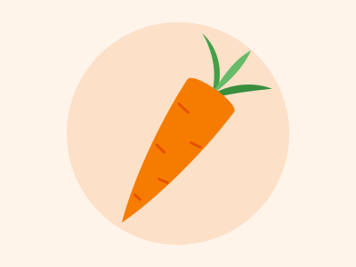

Le potager

Le potager est divisé en petites planches de culture que les enfants entretiennent eux-mêmes : on y trouve des carottes, des tomates, du gombo et des herbes aromatiques.
Pendant la saison sèche, l'eau est précieuse : on arrose tôt le matin, au pied des plantes.